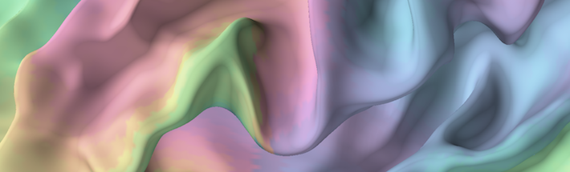

Michael Waskom, PhD

- Waskom ML (2021). seaborn: statistical data visualization. Journal of Open Source Software 6(60): 3021.
- van Viegen T, Akrami A, Bonnen K, [...,] Waskom ML, [...,] Peters MAK (2020). Neuromatch Academy: Teaching Computational Neuroscience with Global Accessibility. Trends in Cognitive Sciences 25(7): 535–538.
- Waskom ML, Okazawa G, & Kiani R (2019). Designing and interpreting psychophysical investigations of cognition. Neuron 104(1): 100–112.
- Gagnon SA, Waskom ML, Brown TI, & Wagner AD (2019). Stress impairs episodic retrieval by disrupting hippocampal and cortical mechanisms of remembering. Cerebral Cortex 29(7): 2947–2964.
- Waskom ML & Kiani R (2018). Decision making through integration of sensory evidence at prolonged timescales. Current Biology 28(23): 2350–3856. PDF | Code & Data
- Waskom ML, Asfour J, & Kiani R (2018). Perceptual insensitivity to higher-order statistical moments of coherent random dot motion. Journal of Vision 18(6): 9. PDF | Code & Data
- Waskom ML & Wagner AD (2017). Distributed representation of context by intrinsic subnetworks in prefrontal cortex. Proceedings of the National Academy of the Sciences, USA 114(8): 2030–2035. PDF | Code | Data | Highlight
- Waskom ML, Frank MC, & Wagner AD (2017). Adaptive engagement of cognitive control in context-dependent decision-making. Cerebral Cortex 27(2): 1270–1284. PDF | Code & Data
- Thompson TW*, Waskom ML*, Gabrieli JDE (2016). Intensive working memory training produces functional changes in large-scale frontoparietal networks. Journal of Cognitive Neuroscience 28(4): 575–588. PDF
- Treadway MT, Waskom ML, Dillon DG, Holmes AJ, Park MTM, Chakravarty MM, Dutra SJ, Polli FE, Iosifescu DV, Fava M, Gabrieli DG, & Pizzagalli DA (2015). Illness progression, current stress and morphometry of medial prefrontal cortex and hippocampus in major depression. Biological Psychiatry 77(3): 285–294.
- Waskom ML*, Kumaran D*, Gordon AM, Rissman J, & Wagner AD (2014). Frontoparietal representations of task context support the flexible control of goal-directed cognition. Journal of Neuroscience 34(32): 10743–10755. PDF | Code | Data
- Thompson TW, Waskom ML, Garel KA, Cardenas-Iniguez C, Reynolds GO, Winter R, Chang P, Pollard K, Lala N, Alvarez GA, & Gabrieli JDE (2013). Failure of working memory training to enhance cognition or intelligence. PLoS ONE 8(5): e63614.
- Gorgolewski K, Burns C, Madison C, Clark D, Halchenko YO, Waskom ML, & Ghosh SS (2011). Nipype: A flexible, lightweight, and extensible neuroimaging data processing framework in Python. Frontiers in Neuroinformatics 5(13).